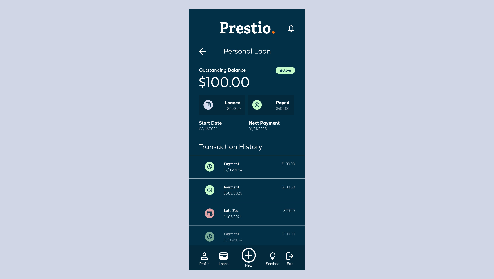
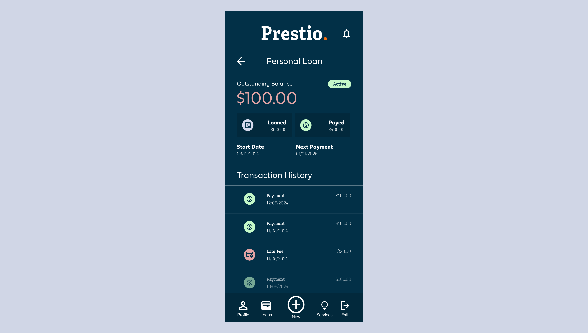
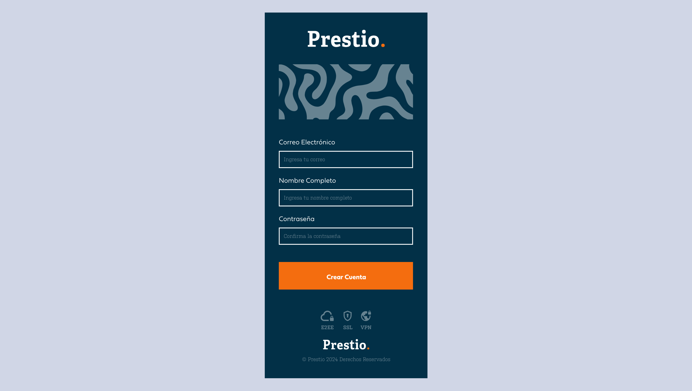
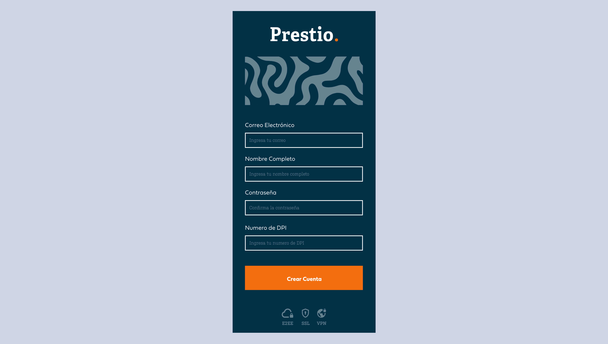

Prestio App 3-Day Challenge: UX Design & Development
Client
Prestio
Release
09/12/2024
I was challenged to conduct UX Design and Development in just 3 days for an app
that allows users to manage their loans and services in a secure and easy way. I used the Design Thinking
approach to empathize with the user, define the problem, ideate solutions, prototype, and test. I then
developed the concept using React.js.
Case Study
Project Overview
The Problem
Users need a reliable, secure, and easy-to-use application to manage their loans and services.
The Goal
Design and develop a web application that allows users to manage their loans and services in an easy, fast,
and secure way.
My Role
User Experience (UX) Designer and Developer.
Responsibilities
Conduct user research
Identify pain points
Ideate solutions
Create wireframes
Conduct usability studies
Develop prototypes
Implement in React
User Research
Summary
A quantitative study was conducted to analyze user statistics in Guatemala and the United States regarding
online loan management. This study revealed that most users are between 20 and 45 years old, with an equal
distribution of men and women, although predominantly men in Guatemala. The primary reasons for taking out a
loan are to invest in businesses and consolidate debt.
Additionally, a qualitative study was carried out, involving interviews with three participants to gain a
deeper understanding of users, their needs, desires, and pain points.
User Personas
Andrea
"I get excited when loan applications are legitimate and don’t involve complicated processes."
Goals
Apply for loans to invest in my projects.
Frustrations
Loan applications that are fake.
Loan processes that are overly complicated.
Andrea, a 40-year-old mom, is a passionate chef and entrepreneur. She dreams of expanding
her culinary business but needs a loan to make it a reality. She feels excited about reliable and
simple loan applications that allow her to focus on her passion without unnecessary complications.
User Journey Map
(Click on image to enlarge)
User Flow
(Click on image to enlarge)
Information Architecture
(Click on image to enlarge)
Paper Wireframe
(Click on image to enlarge)
Digital Wireframe
(Click on image to enlarge)
Low-fidelity Prototype
(Click on image to enlarge)
High-Fidelity Prototype
(Click on image to enlarge)
Development
The web app was then developed using React, and it is still under active development.
(Click on image to enlarge)
Usability Study
A remote usability study was conducted with two users in Guatemala to evaluate whether the application was
easy to use and effectively addressed the identified user problems.
We then gathered the data and organized it, which resulted in the following insights:
Round 1 Findings
It is difficult to see the remaining balance in the loan section.
It is better to request the necessary documents upfront to assess payment capacity.
Given the insights we found through our Usability Study, we adapted the design to improve the user
experience and make the web app easier to use.
Before And After




Accesibility
To prioritize accessibility, the app interface was designed with a dark background to enhance the user
experience, especially for those sensitive to brightness. Prominent headers and alternative text (alt) for
images were included to improve accessibility, particularly for screen reader users.
Takeaways
I learned the importance of understanding user needs in the industry, such as the preference for simple,
fast, and secure processes. Through user research, I discovered that accessibility and transparency are
essential to building trust and loyalty in a competitive market.
Next Steps
Multiple Languages and responsiveness: If I had more time, I would enhance the app's
accessibility by adding
multiple language options to reach a broader audience and design the interface for all devices.
Dark Mode: I would also design the app with both light and dark modes to better utilize
the color palette and provide a more flexible visual experience for users.
Expand Research: Finally, I would conduct user and usability studies with a larger group
to refine and improve the user experience more accurately and effectively.
Conclusion
The design and development of this user experience showcase everything I was able to achieve in just three
days, focusing on user needs and pain points.
Imagine what I could accomplish for you with more time and resources. If you're interested in
discussing further, feel free to contact me at hello@uxrodrigo.com.
Thank you very much!
Let's get in touch
Have a project in mind? Let's build something great together!